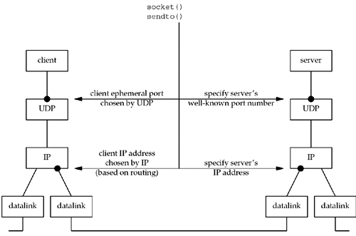
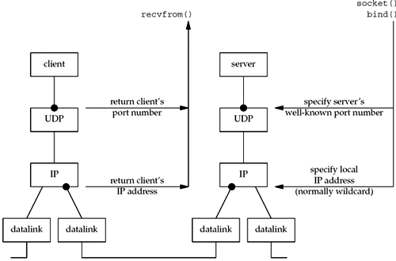
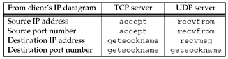

| [ Team LiB ] |
|
8.10 Summary of UDP ExampleFigure 8.11 shows as bullets the four values that must be specified or chosen when the client sends a UDP datagram. Figure 8.11. Summary of UDP client/server from client's perspective. The client must specify the server's IP address and port number for the call to sendto. Normally, the client's IP address and port are chosen automatically by the kernel, although we mentioned that the client can call bind if it so chooses. If these two values for the client are chosen by the kernel, we also mentioned that the client's ephemeral port is chosen once, on the first sendto, and then it never changes. The client's IP address, however, can change for every UDP datagram that the client sends, assuming the client does not bind a specific IP address to the socket. The reason is shown in Figure 8.11: If the client host is multihomed, the client could alternate between two destinations, one going out the datalink on the left, and the other going out the datalink on the right. In this worst-case scenario, the client's IP address, as chosen by the kernel based on the outgoing datalink, would change for every datagram. What happens if the client binds an IP address to its socket, but the kernel decides that an outgoing datagram must be sent out some other datalink? In this case the IP datagram will contain a source IP address that is different from the IP address of the outgoing datalink (see Exercise 8.6). Figure 8.12 shows the same four values, but from the server's perspective. Figure 8.12. Summary of UDP client/server from server's perspective. There are at least four pieces of information that a server might want to know from an arriving IP datagram: the source IP address, destination IP address, source port number, and destination port number. Figure 8.13 shows the function calls that return this information for a TCP server and a UDP server. Figure 8.13. Information available to server from arriving IP datagram. A TCP server always has easy access to all four pieces of information for a connected socket, and these four values remain constant for the lifetime of a connection. With a UDP socket, however, the destination IP address can only be obtained by setting the IP_RECVDSTADDR socket option for IPv4 or the IPV6_PKTINFO socket option for IPv6 and then calling recvmsg instead of recvfrom. Since UDP is connectionless, the destination IP address can change for each datagram that is sent to the server. A UDP server can also receive datagrams destined for one of the host's broadcast addresses or for a multicast address, as we will discuss in Chapters 20 and 21. We will show how to determine the destination address of a UDP datagram in Section 22.2, after we cover the recvmsg function. |
| [ Team LiB ] |
|